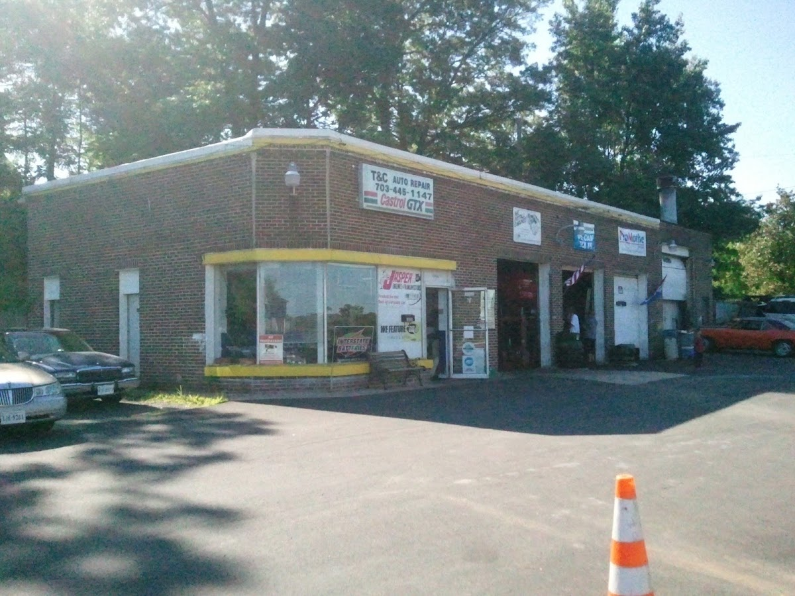

18405 Jefferson Davis Hwy, Triangle, VA 22172
Honest diagnostics.
Reliable repairs.
Complete bumper-to-bumper maintenance, brake service, state inspections, and computerized engine diagnostics.

18405 Jefferson Davis Hwy, Triangle, VA 22172
Independent Auto Repair & Mechanics
Expert Workmanship
What We Do.
Maintenance
Maintenance
- Full Synthetic Oil & Filter Service
- Virginia State Safety Inspection
- Fluid Flushes (Coolant, Transmission, Brake)
- Tire Rotation, Balancing & TPMS
- Battery Health Test & Replacement
Have a custom question or special project? Call us directly at (703) 445-1147.
Location
18405 Jefferson Davis Hwy, Triangle, VA 22172Hours of Operation
Mon-Fri 8:30am-6pm, Sat 9am-2pm
Please call ahead on holidays or during severe weather to confirm.